南京之旅
首日到达
咱上周五晚一上完课就滚去汉口站，这🪝计租老师拖堂十几分钟，差点没赶上
在高铁上倒是没啥新奇事儿，只是下站了以后kuri掉了身份证和他的罗小黑💼
酒店就在南大鼓楼附近，也是近距离接触了下华五✌️
随手一拍
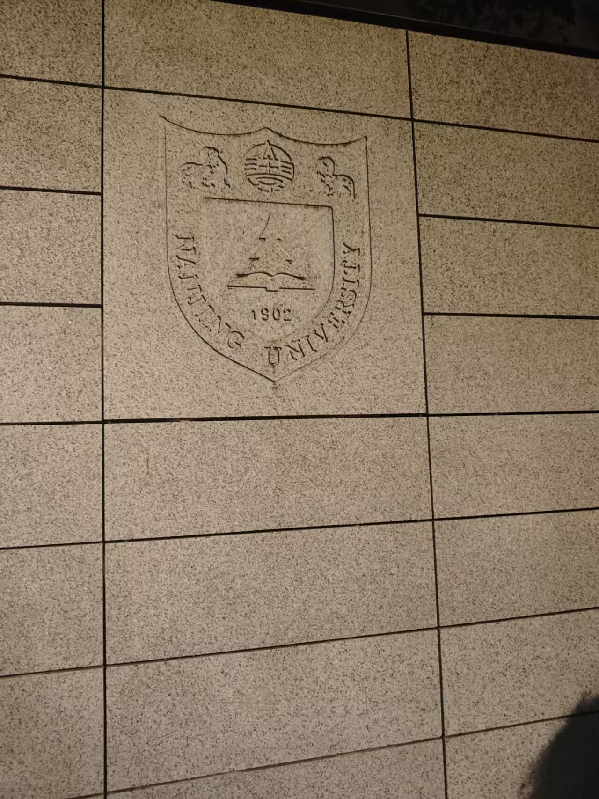
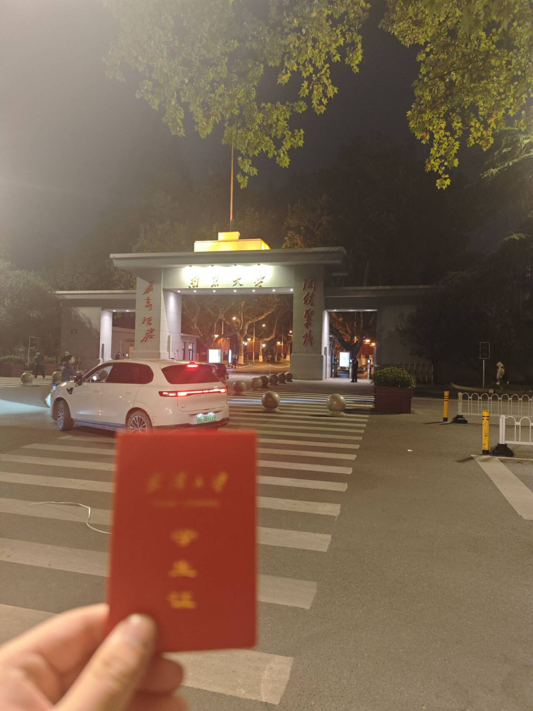
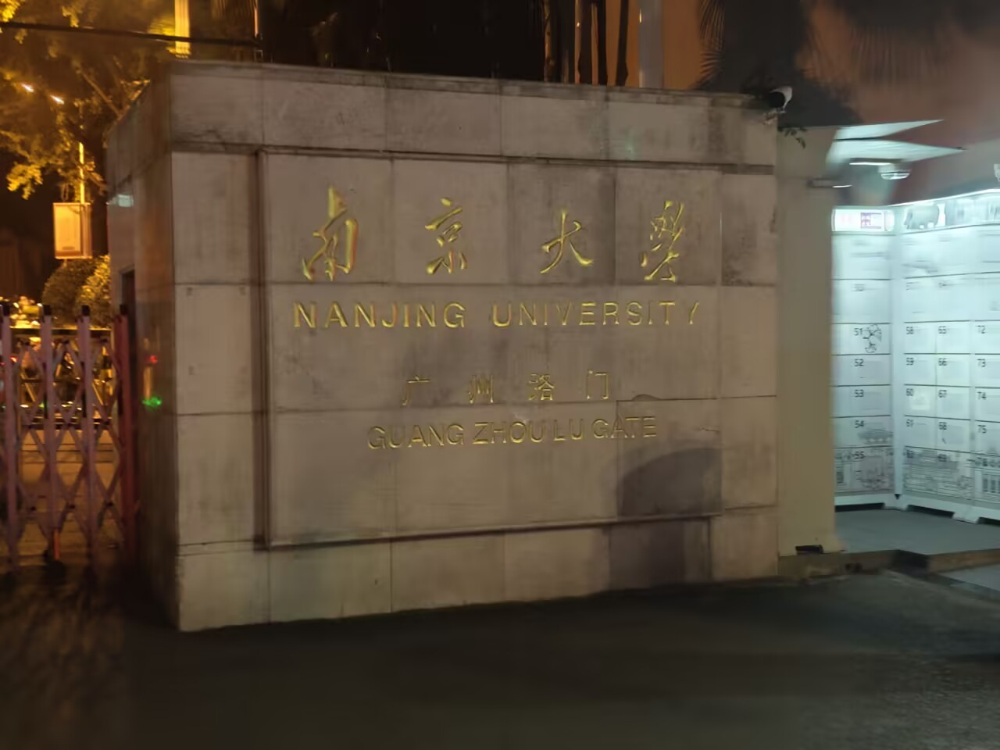
day1
day1 的旅程主要是梧桐大道那一块，哎,想起来之前去西安四天每天都三万多步
但是现在一天三万多步就不行了，几个月而已，人怎么能老这么快
很让我感到惊讶的一部分是，南京的汤包居然是甜口的😠，我是吃不来
可惜现在还不完全是时候，枫树还没到最好看的样子
晚上吃了个🍎自助，这一天过得还算爽快，就是聊天不太爽快
因为kuri不让我们一直说adult topic，真是小孩一样呢
这自助我必须说道说道，叫晶丽海鲜自助，性价比很高，169学生价
随心一拍
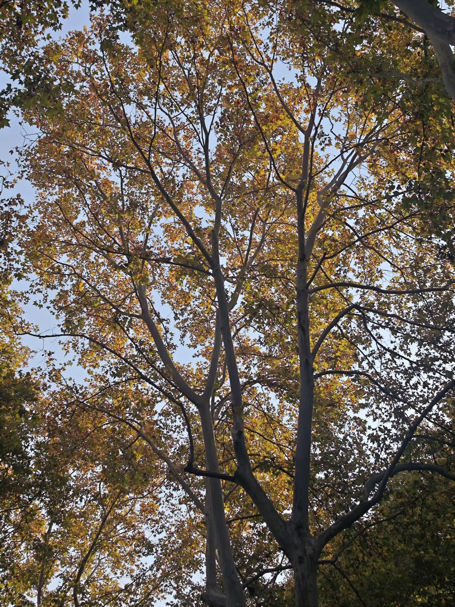
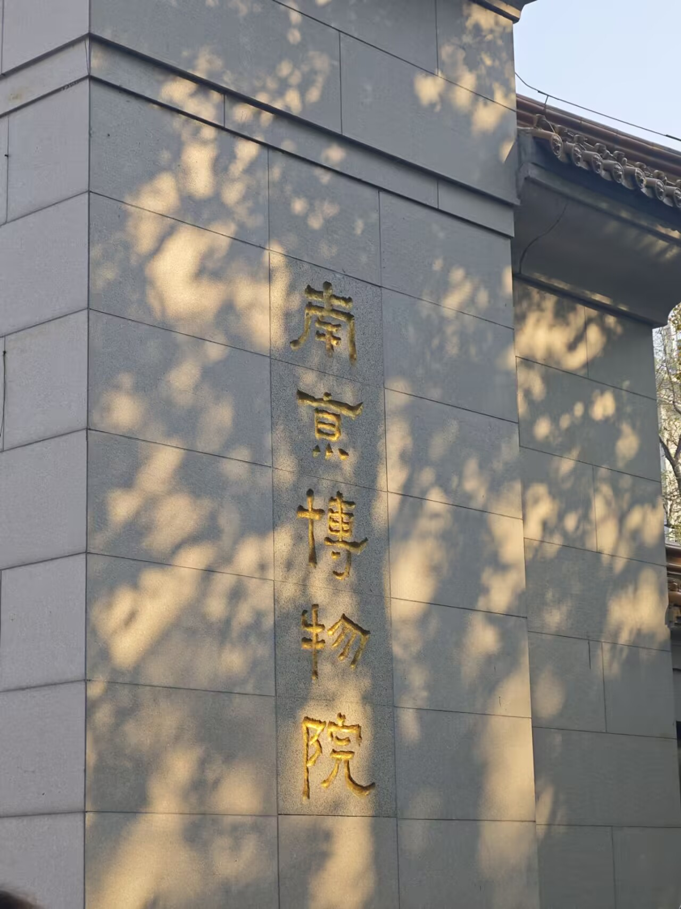
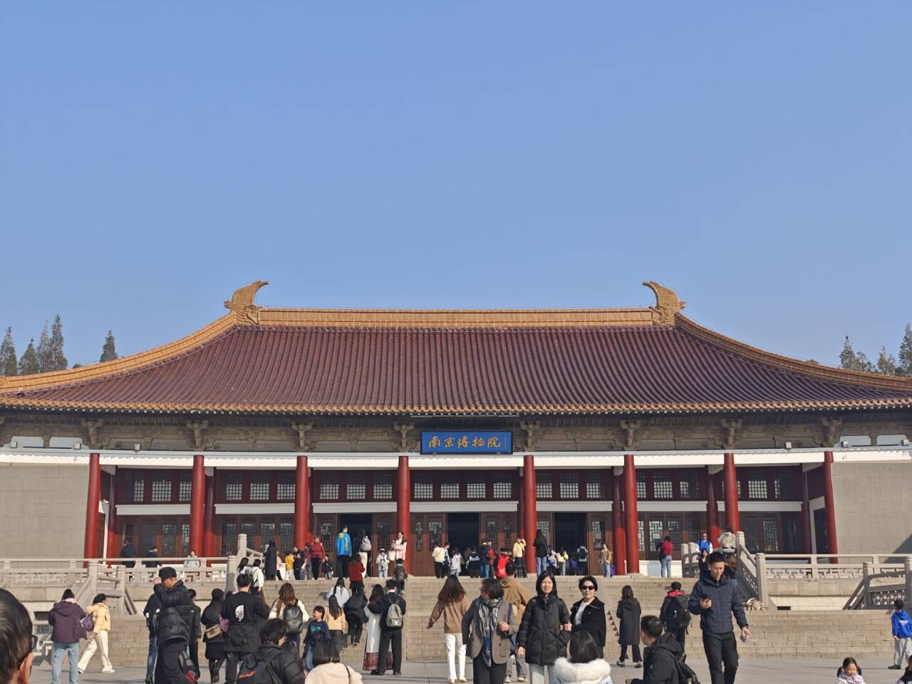
感觉南京博物院不如湖北博物馆权威

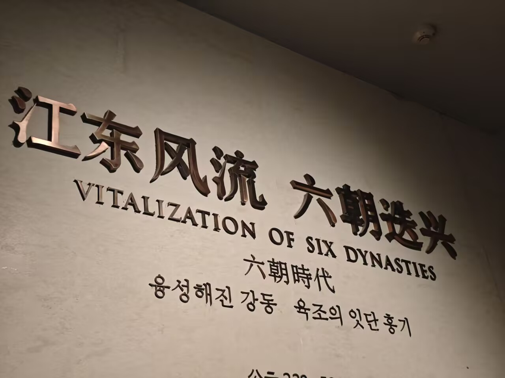
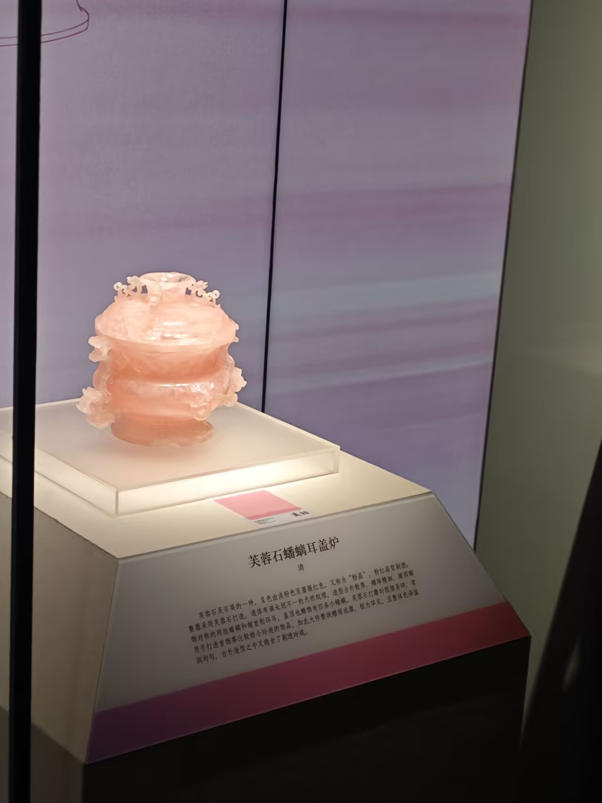
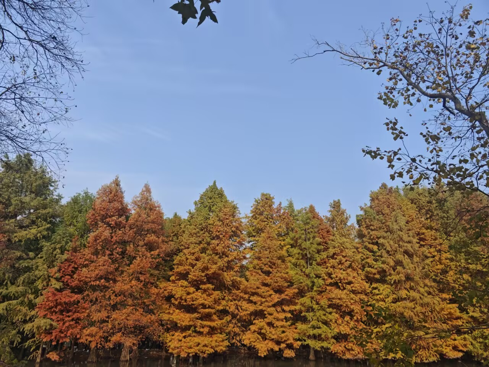
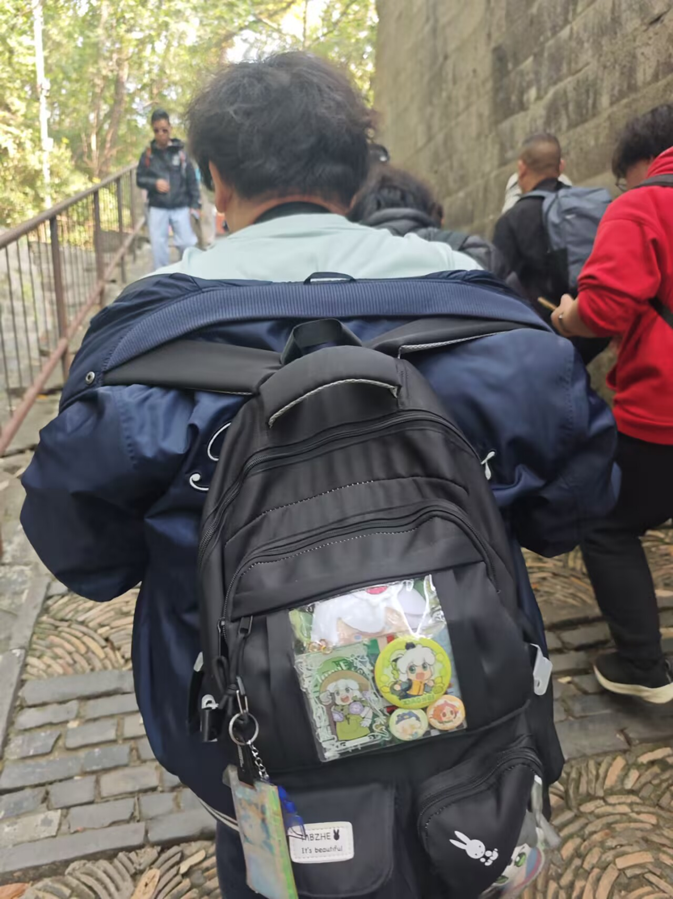
kuri背影
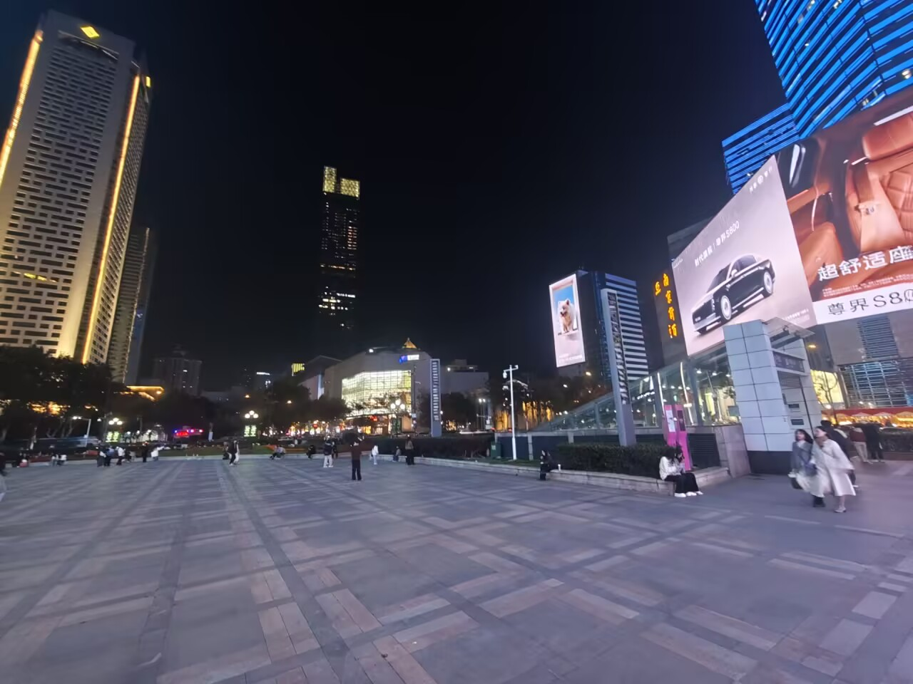
day2
第二天是一些我很期待的地方，包括南大，鸡鸣寺斩烂桃花这一块，总统府什么的
南大的爬山虎很漂亮，但是总体来说还是🤚更漂亮，要是还是国立中央大学或许会更漂亮更有底蕴吧
总统府总体来说一般般吧，有点没有特色了，都是讲讲近代史，大殿长廊感觉稍微好点
鸡鸣寺一般
南京大排档挺好的，就是有点太预制了
下午在玄武湖开船，开船确实是很有意思，就是几个大卫带搞得船不太稳
南京的女孩子比武汉的漂亮
随性一拍
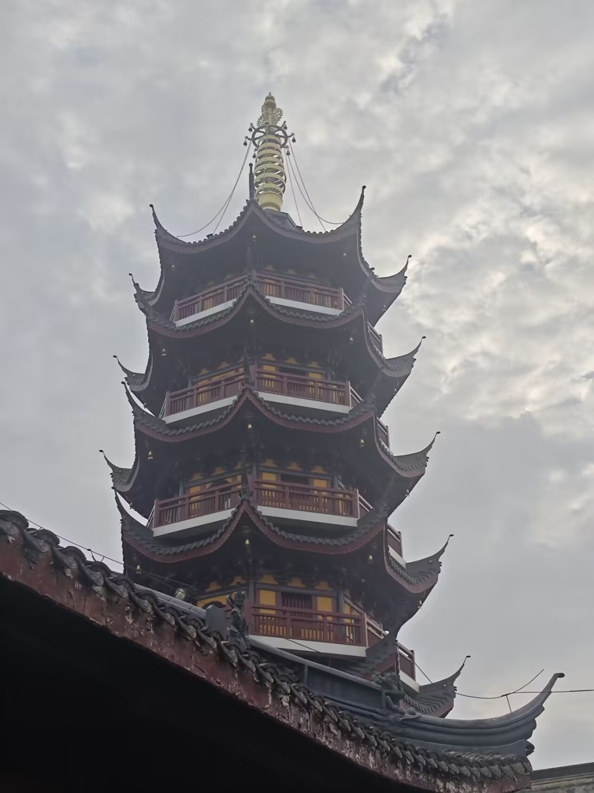


总的来说还是很令人难忘的一次旅程，就是南京没啥好玩的网吧，要是还有机会希望能去seu以及仙林看看
title: 南京之旅
date: 2025-11-25 18:46:30
tags: 旅游事记
首日到达
咱上周五晚一上完课就滚去汉口站，这🪝计租老师拖堂十几分钟，差点没赶上
在高铁上倒是没啥新奇事儿，只是下站了以后kuri掉了身份证和他的罗小黑💼
酒店就在南大鼓楼附近，也是近距离接触了下华五✌️
随手一拍
day1
day1 的旅程主要是梧桐大道那一块，哎,想起来之前去西安四天每天都三万多步
但是现在一天三万多步就不行了，几个月而已，人怎么能老这么快
很让我感到惊讶的一部分是，南京的汤包居然是甜口的😠，我是吃不来
可惜现在还不完全是时候，枫树还没到最好看的样子
晚上吃了个🍎自助，这一天过得还算爽快，就是聊天不太爽快
因为kuri不让我们一直说adult topic，真是小孩一样呢
这自助我必须说道说道，叫晶丽海鲜自助，性价比很高，169学生价
随心一拍
感觉南京博物院不如湖北博物馆权威
kuri背影
day2
第二天是一些我很期待的地方，包括南大，鸡鸣寺斩烂桃花这一块，总统府什么的
南大的爬山虎很漂亮，但是总体来说还是🤚更漂亮，要是还是国立中央大学或许会更漂亮更有底蕴吧
总统府总体来说一般般吧，有点没有特色了，都是讲讲近代史，大殿长廊感觉稍微好点
鸡鸣寺一般
南京大排档挺好的，就是有点太预制了
下午在玄武湖开船，开船确实是很有意思，就是几个大卫带搞得船不太稳
南京的女孩子比武汉的漂亮
随性一拍
总的来说还是很令人难忘的一次旅程，就是南京没啥好玩的网吧，要是还有机会希望能去seu以及仙林看看
这是全文，我懒得改了，这个md名字叫南京之旅.md，我已经有一个同名文件夹里面放照片了，给我改一下图片路径
Comments